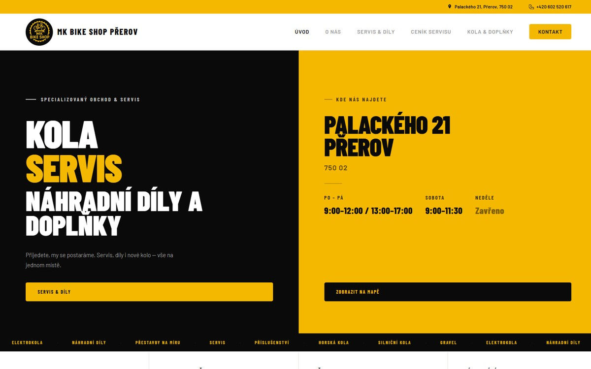
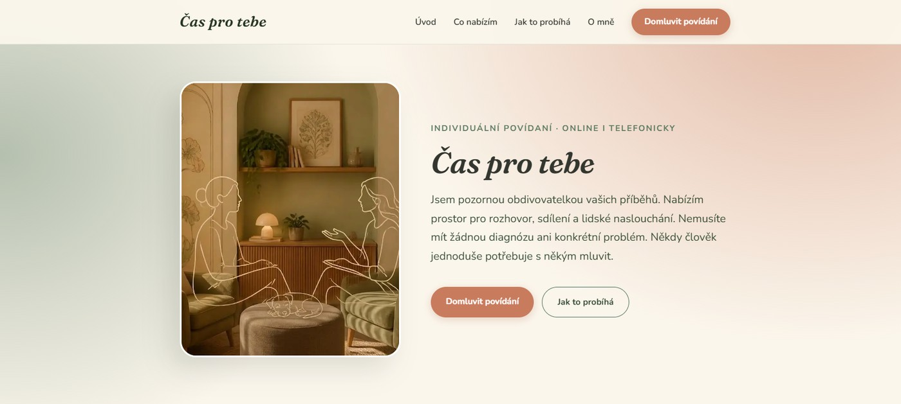
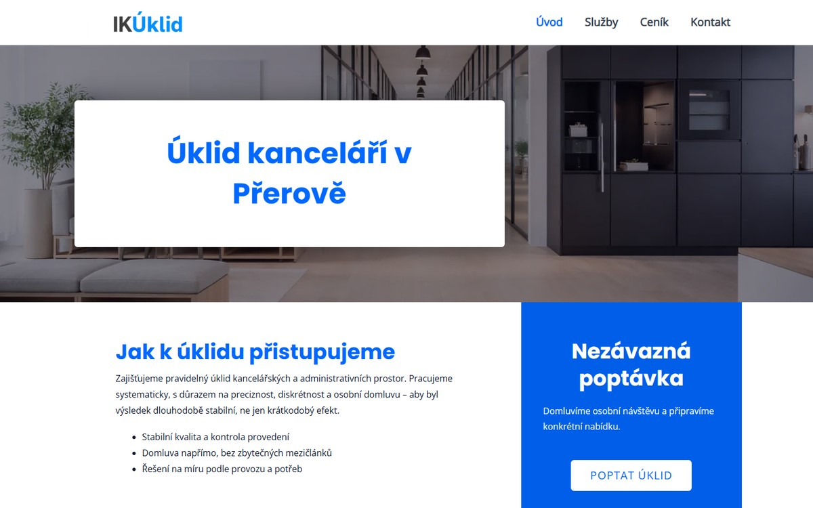

FREELANCER • WEBY • SPRÁVA
Tvorba webů pro živnostníky a malé firmy
Napište miJak to funguje
Řeknete mi, co děláte. Zbytek vyřeším za vás.
Texty, grafika, spuštění – vše v jednom. Vy se staráte o svůj byznys. Já o váš web.
- Zavoláte nebo napíšete — řeknete mi, co potřebujete
- Pustím se do práce — texty, vzhled, technika
- Web je hotový a online — spustím ho a předám vám ho
S ČÍM VÁM POMŮŽU
Web, se kterým si nemusíte lámat hlavu
-
Texty na web
Nemusíte vymýšlet, co napsat. Řeknete mi o svém podnikání a já z toho udělám texty, které zákazníky osloví.
-
Design na míru
Čistý, přehledný web, který reprezentuje vaše podnikání. Návrh dělám podle vás a vašich zákazníků.
-
Funguje na mobilu
Víc než polovina lidí hledá z mobilu. Váš web bude vypadat dobře na telefonu, tabletu i počítači.
-
SEO — aby vás zákazníci našli
Technické základy SEO jsou součástí každého webu. Správná struktura, rychlost, popisky.
-
Pomoc s doménou a hostingem
Poradím vám s výběrem a všechno nastavím za vás — ať máte vše pod kontrolou a vlastníte svůj web.
-
Péče po spuštění
Spuštění webu je začátek, ne konec. Když budete chtít něco změnit, přidat nebo opravit, ozvěte se — vždycky víte předem co a za kolik.
PÉČE O WEB
Jsem tu pro vás i po spuštění
Web není jednorázová záležitost. Potřebuje péči — aktualizace, změny, opravy. Nemusíte na to být sami.
- Průběžné úpravy — nová fotka, služba, ceník
- Technická údržba — aktualizace a zabezpečení
- Technická podpora — když něco nefunguje
*Rozsah a cenu domluvíme předem.
Chci web bez starostíMOJE PRÁCE
Weby, které už běží
-

MK Bike Shop
Web pro cykloservis v Přerově — servis, prodej kol, ceník a otevírací doba.
-

Čas pro tebe
Web pro individuální povídání online i telefonicky — klidný, osobní a bez zbytečností.
-

IK Úklid
Web pro úklidovou firmu v Přerově — přehled služeb a nezávazná poptávka.